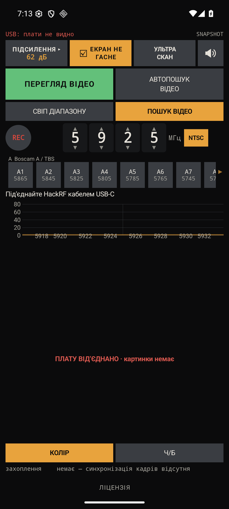
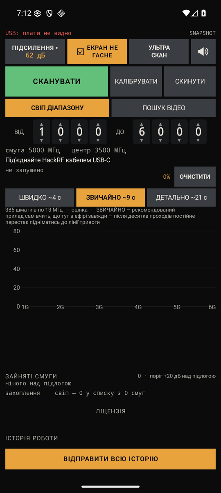

Приймач аналогового відео · HackRF
SYCH FPV SCANNER
Застосунок для Android, який приймає аналогове відео з камер FPV-дронів. Плата HackRF під'єднується до телефона кабелем, а застосунок показує картинку з ефіру, спектр діапазону і сам шукає, де відео є.
Це закрита бета-версія. Збірка йде вузькому колу людей, які перевіряють її в полі.
- Android 7 або новіший
- HackRF One, клони або плата під PortaPack
- Кабель USB-C для даних
Апаратний бар'єр
Половина невдалих запусків — це кабель, а не застосунок
- Android 7 або новіший.
- HackRF One. Застосунок працює і з клонами, і з платою під PortaPack.
- Кабель для даних: USB-C↔USB-C, або USB-C↔micro-USB для старіших плат.
- Антена на потрібний діапазон.
Кабель лише для заряджання не підійде — у ньому немає ліній даних. Плата в такому разі просто не з'явиться на шині, і виглядає це точнісінько як «застосунок нічого не знаходить».
Плата живиться від телефона. На тривалій роботі телефон помітно сідає — це нормально й цього не обійти.
Перший запуск
Три кроки до першої картинки
- Під'єднай плату. Застосунок знайде її сам. Якщо вона в режимі PortaPack, застосунок сам поверне її в режим радіо — це триває кілька секунд, тож зачекай, перш ніж щось перетикати.
- Натисни ПУСК і відкрий вкладку ПОШУК ВІДЕО. Буде жива картинка з тієї частоти, що стоїть у полі частоти. Канали внизу перемикаються одним дотиком.
- Вистав підсилення — наступний розділ. Зроби це до того, як шукати щось усерйоз: неправильне підсилення дає порожній екран, на якому нічого не видно навіть тоді, коли передавач працює за два метри.

Підсилення
Два числа в одному рядку, і плутати їх — найдорожча помилка
Унизу екрана є рядок АЦП. У ньому два різні числа, і вони означають різне.
АЦП 0% · рівень 4 зі 127 ← замало, тракт недовантажений АЦП 0% · рівень 60 зі 127 ← добре АЦП 85% · рівень 120 зі 127 ← забагато, сигнал обрізається
Відсоток — це обрізання. Його має бути нуль. Рівень — це наскільки повно завантажений тракт. Він має бути близько 60.
Порядок дій: піднімай VGA, доки відсоток не зрушить з нуля. Тоді опусти на два кроки назад — щоб вийти з обрізання й лишити запас. У підсумку відсоток знову нуль, а рівень десь коло шістдесяти.
Крутити треба в обидва боки. Рівень 0 зі 127 — такий самий провал, як і перевантаження: у першому випадку міряти нема чого, у другому міряти вже неможливо.
Неправильно виставлене підсилення виглядає точно як несправний застосунок. Це найчастіша причина скарг «нічого не працює» серед тих, де кабель у порядку.
Режими
Один приймач і п'ять способів дивитися на ефір
ПОШУК ВІДЕО
Жива картинка з однієї частоти. Канали внизу можна перемикати одним дотиком.
СВІП ДІАПАЗОНУ
Спектр і водоспад усього діапазону. Видно, на яких частотах взагалі щось є, перш ніж ставати на якусь із них.
АВТОПОШУК ВІДЕО
Шукає у фоні й показує кадри зі знайдених каналів, гортаючи їх сам. Дотик до великого напису з частотою над кадрами перемикає приймач на цей канал.
Підтверджений канал лишається в списку до двох хвилин, навіть коли сигнал просів, і підписаний УТРИМУЄТЬСЯ 1:20 · перевірок без відповіді 2/5. Поки він тримається, застосунок перевіряє його щопроходу попри рівень. П'ять перевірок без відповіді або дві хвилини — і канал забувається.
УЛЬТРА СКАН
Перевіряє все, що піднялось над шумом, а не лише те, що схоже на відео за шириною. Прохід стає довшим у рази — і це свідомо: так знаходиться камера, яку звичайний відбір відкидає за формою сигналу.
КАЛІБРУВАТИ
Десять хвилин, протягом яких плата, антена й телефон стоять нерухомо. Приймач за цей час міряє підлогу шуму саме цього місця. Рух за час калібрування міняє те, що міряється, тож вимір виходить ні про що.
Після калібрування слабкі сигнали видно помітно краще.

Мережевий перегляд
Нове в цій збірці — і тут від тебе потрібен замір
Унизу екрана відкрий розділ МЕРЕЖЕВИЙ ПЕРЕГЛЯД. Увімкни його під час приймання й натисни СКОПІЮВАТИ ПОСИЛАННЯ. Відкрий це посилання на ноутбуці або другому телефоні в тій самій мережі — там будуть спектр, водоспад, список знайдених каналів і кадри.
Перевірити треба три речі.
- Чи працює при згаслому екрані. Поклади телефон у кишеню на пів години й подивись, чи сторінка досі оновлюється. Застосунок просить Wi-Fi не засинати, але режими економії виробника сильніші за будь-яке прохання, і на різних апаратах це закінчується по-різному. Напиши, який у тебе телефон і що вийшло — це і є замір, якого з-за столу не зробити.
- Скільки з'їдає батарея за виїзд, і чи не починає гальмувати сам приймач.
- Якщо сторінка не відкривається — глянь на рядок «глядачів було». Нуль означає, що сервер на телефоні піднявся, але ніхто до нього не дійшов: порт слухає, а не пускає мережа. Гостьовий Wi-Fi часто забороняє пристроям бачити одне одного.
Сервер працює рівно поки йде приймання. Після СТОП, від'єднаної плати або виходу із застосунку сторінка чесно скаже, що зв'язок утрачено.
Посилання містить ключ, і без нього сторінка не віддасть нічого. Але з'єднання через звичайний HTTP не шифрується — тож це захист від випадкового глядача, а не від того, хто слухає мережу. У чужій мережі краще не вмикати.
Коли щось не так
Застосунок навмисно каже, коли винен не він
потік 24% — доходить 59 блоків із 244
Телефон не встигає читати дані через USB. Трапляється на цілком сучасних апаратах і налаштуваннями застосунку не лікується. Спробуй інший кабель; якщо не допомогло — інший телефон. І обов'язково напиши модель: саме це зараз і вивчається.
ПОТІК СТОЇТЬ 7 с · покази нижче застигли · піднімаю сам
Плата перестала віддавати дані, і всі показники під цим рядком застигли на останньому значенні. Це окреме повідомлення з'явилось тому, що раніше така зупинка виглядала як звичайне перевантаження — АЦП 100%, рівень 127, — і крутити там VGA було безглуздо: плата вже нічого не передавала, міряти не було чого. Застосунок тричі пробує підняти потік сам і подає звук.
гребінка й захоплення недійсні · зменшіть VGA
Перетворювач дійшов до межі. Усі показники нижче цього рядка зараз недійсні — дивитись на них немає сенсу, поки не зменшиш підсилення.
Плата не повернулася з режиму PortaPack
Зачекай ще секунд десять, перш ніж перетикати кабель. Інколи плата повертається в робочий режим довше, ніж застосунок чекає на відповідь.
ПРИСТРОЇ НА ШИНІ
Якщо там, окрім HackRF One, є хаб, перехідник чи мережева карта — під'єднай плату прямо до телефона. Хаб ділить між пристроями і пропускну здатність, і живлення, а HackRF потребує і того, і того.
Діагностика
Знімок показує одну мить, а відповідь зазвичай у тому, що змінювалось
Унизу екрана відкрий ДІАГНОСТИКА ▸ і натисни СКОПІЮВАТИ ДІАГНОСТИКУ. У буфер ляже довгий текст: модель телефона, стан плати, потік, декодер — і таблиця за останні дві хвилини, з новим рядком кожні пів секунди.
Надсилай саме цей текст, а не знімок екрана. Знімок показує одну мить. Таблиця показує, як числа рухались перед тим, як усе пішло не так, — і саме це зазвичай і є відповіддю.
Сіра кнопка не означає поломку. Вона стає жовтою тільки тоді, коли вже є що копіювати. Поки приймач не пропрацював хвилину без перерви, кнопка сіра, а поруч іде відлік — «ще 43 с». Це не налаштування, воно нічого не вмикає: часовий ряд збирається сам увесь час, поки йде картинка.
Якщо плату від'єднали або потік зупинився, відлік почнеться заново — бо хвилина з двох уривків по пів хвилини хвилиною не є. Але вже зібране нікуди не дівається: секунди перед самою зупинкою показують стан системи безпосередньо перед збоєм, і кнопка їх віддасть. У шапці звіту видно, чи ряд про «зараз», чи про те, що було до зупинки.
Якщо приймач узагалі не запускається, кнопка каже СКОПІЮВАТИ СТАН, а поруч — «без ряду». Все одно натисни й надішли: там перелік пристроїв на шині, стан плати, підсилення й журнал, а це саме те, що потрібно, коли нічого не йде.
Чого свідомо ще немає
Дечого бракує навмисно, і це не вада
КОЛІР — ЛИШЕ УВІМК/ВИМК
Кнопки КОЛІР і Ч-Б на сторінці відео. Ручне налаштування відтінку й насиченості прибрано з бети, щоб не захаращувати екран. Повернемо, якщо його бракуватиме.
НЕСТАНДАРТНА РЯДКОВА
Камери з нестандартною рядковою частотою знаходяться, але картинка може лягти обрізаною. Це відоме обмеження, і робота над ним попереду.
ЗВУК
Іде потоком будильника. Через це гучність крутиться кнопками телефона просто в застосунку, не виходячи в налаштування.
КЛЮЧ ПРИ ПЕРШОМУ ЗАПУСКУ
Ключ приходить разом зі збіркою й дійсний 48 годин на активацію. Активував — далі працює, і вікно вже ні до чого. Не встиг — попроси новий, це одна кнопка з мого боку.
Що нового
Три зміни, і кожну варто перевірити саме тому, що було не так раніше
ПЕРЕПІДКЛЮЧИТИ
Кнопка більше не ставить повторні натискання в чергу. Раніше вона не показувала жодної реакції, тож її тиснули ще і ще — а кожне натискання додавало ще пів секунди очікування й робило відновлення повільнішим. Тепер повторне каже «перепідключення вже триває» і нічого не додає.
ЧАСТКА ПОТОКУ
Рядок більше не показує 100% там, де потоку немає взагалі. Тепер так і пише: «потоку немає». Раніше у звіті з мертвою платою стояла бадьора сотня, і саме за цим рядком питають, чи йдуть дані.
ЗНАЙДЕНЕ ВІДЕО НЕ БЛИМАЄ
Канал тримається в списку, навіть коли сигнал просів. Якщо в тебе є передавач на межі чутності — саме на ньому це й цікаво перевірити: чи лишається знахідка в списку, поки ти ходиш з антеною, і чи оновлюється картинка.
Зворотний зв'язок
Найцінніше — те, що розійшлось з очікуванням
- Інтерфейс. Що незрозуміло з першого погляду. Де ти очікував знайти кнопку й не знайшов. Який напис ти зрозумів не так, як було задумано. Саме заради цього збірка в тебе й опинилась.
- Чи знайшов застосунок твій передавач — і з якої відстані, з якою антеною, за якої потужності.
- Чи збіглося те, що показує застосунок, із тим, що ти бачиш на звичайному приймачі. Якщо розійшлось — напиши, що саме показали обидва. Це найцінніше повідомлення з усіх.
- Що дратує. Серйозно. Кнопка не там, текст задовгий, щось блимає. Половина зробленого тут з'явилась саме з таких зауважень.
Куди писати
Збірка, діагностика й уся розмова — в одному місці
Там лежить застосунок, туди надсилай діагностику й зауваження, там виходять нові версії. Те саме посилання є і в самому застосунку, у розділі ПРО ПРОГРАМУ.
t.me/mammoth_forge